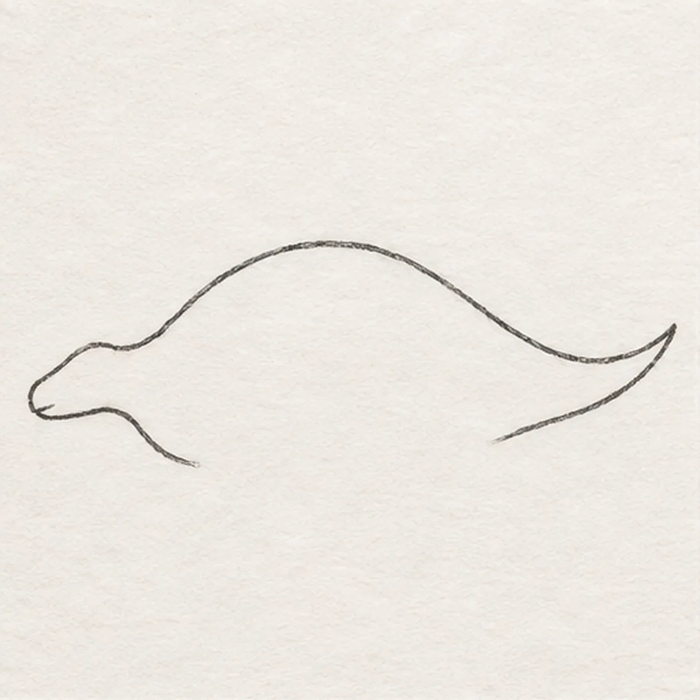
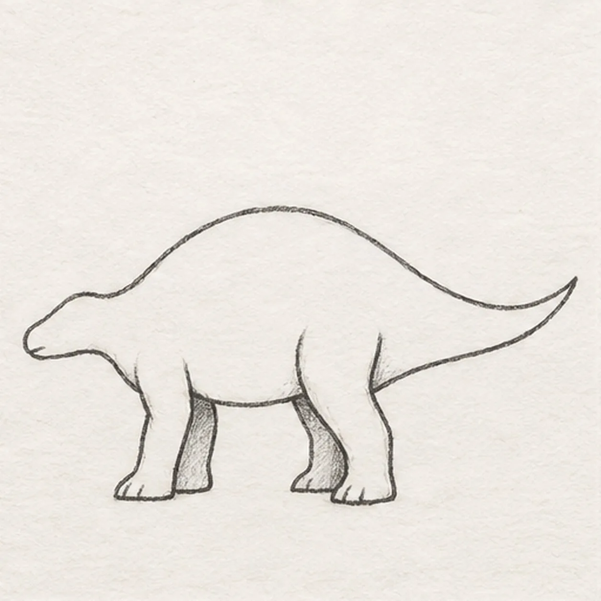
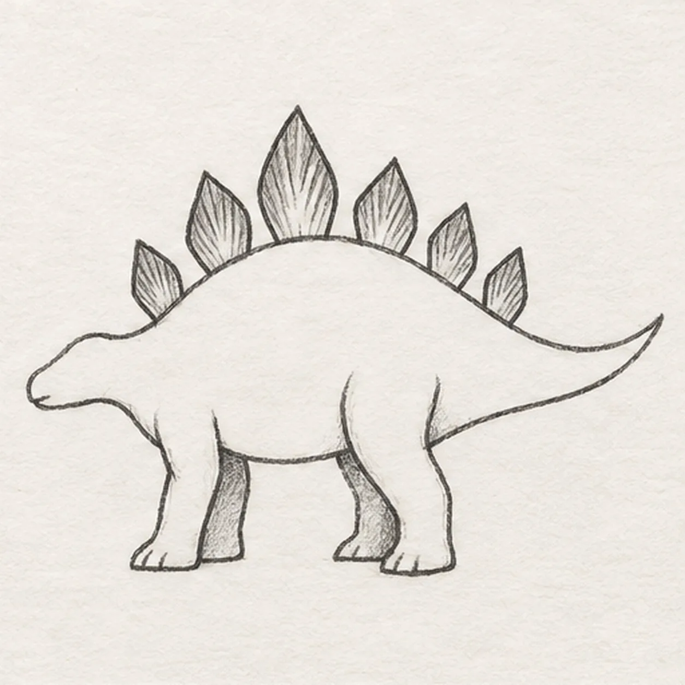
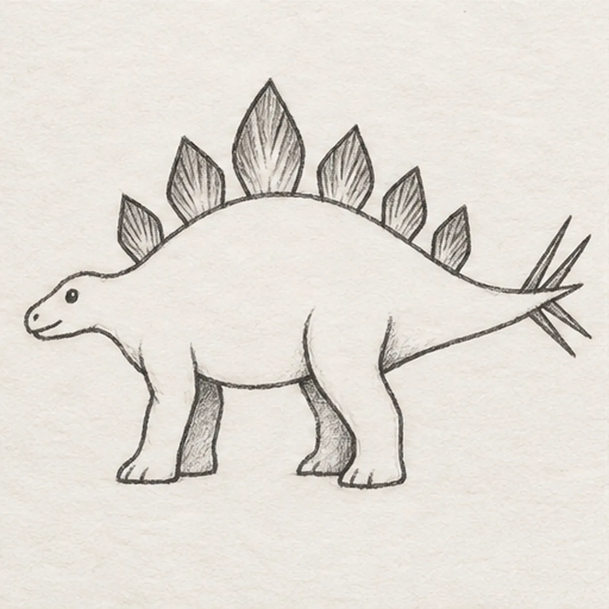
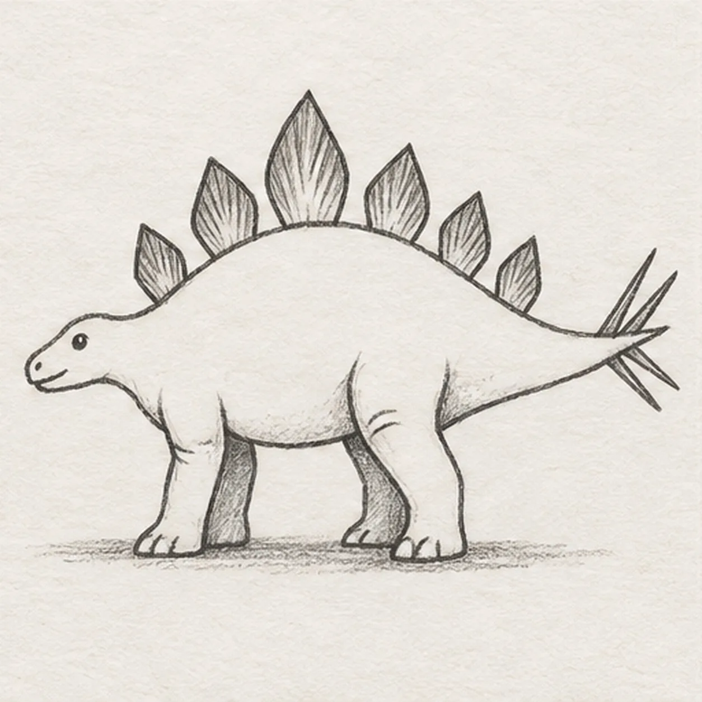

From the archive
Let's draw a stegosaurus
Treat this as one small practice round: build the subject lightly, notice the shapes, then darken only the lines that help the finished sketch.
-
01

Draw the head and back
Start at the small rounded snout on the left, rise gently into the neck, and sweep a broad arch over the back. Taper the line into a long tail on the right, turn around its tip, and stop beneath the tail. Leave the belly and leg area open.
Sketch tip: Keep the head low and small; the long back curve does most of the work. Leave the bottom open for legs.
-
02

Connect the legs and belly
Below the shoulder, draw a short front leg with a flat foot. Add a wider hind leg below the rear body, join the belly between them, and add two narrower far legs behind the near pair. Stop their upper edges at the body. Add two short toe divisions on each near foot and one on the visible far hind foot; shade both far legs lightly.
Sketch tip: Place the feet on an imagined baseline. The far pair needs only narrow visible edges.
-
03

Raise six back plates
Starting behind the neck, draw six pointed leaf-like plates attached along the back. Make the third plate tallest, then reduce their size toward the tail. Keep every plate above the back line and add a few light pencil strokes rising inside each one.
Sketch tip: Count six stylized plates from neck to tail. Vary their heights rather than tracing identical triangles.
-
04

Add the face and tail spikes
Place one small dark eye in the head, one nostril near the snout, and a short mouth line beneath it. Near the tail tip, draw four slim pointed spikes fanning away from their fixed attachments, with two above and two below the tail.
Sketch tip: Keep the face small and the spikes close to the tail tip. Four spikes are enough for this simplified side view.
-
05

Add knee folds and ground
Draw two small curved folds at the front edge of each near knee and a short crease across the front leg. Extend the established toe divisions into rounded toe tips without removing their lines. Sketch a narrow broken ground shadow beneath the feet and lightly hatch the underside.
Sketch tip: Round the existing toe marks by extending them. Keep knee folds short so they read as bends rather than stripes.
-
06
Shade the dinosaur
Shade the underside and far legs with soft graphite. Layer muted olive lightly across the body and warm ochre inside the six plates, leaving the upper back pale. Deepen the existing ground shadow and keep the paper grain visible without adding new outlines.
Sketch tip: Use the side of the pencil with light pressure. The original crease marks should stay readable through the color.